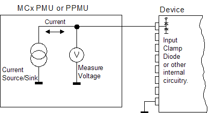

Continuity
This test method checks for continuity of the test signal paths and for short circuits. The test method can be executed for single or both polarities using the PPMU (parallel test).
For PPMU parallel test, the tester class is retrieved. If the test is on P/C/Ce system, the precharge voltage will be set to 0 V or disabled according to the related parameters.
The test method detects open-circuits and short-circuits between the measured pin and ground.
This test method supports test table. But you need to enter the test names manually in the parameter. You can use both test table and testflow limits in a testflow. The test table has higher priority than testflow limits. If a test name used in the test flow is defined in both test table and testflow limits, the value defined in the test table will be used.
Continuity test using PPMU

This test is used to:
- check the chip bonding and connections to the test fixture,
- check protection circuits in the DUT such as input clamp diodes by forcing a current into a device pin and measuring the voltage between that pin and ground,
- check for short-circuits.
Use the both polarities test if both input clamp diodes are present in the DUT, use the single polarity test if only one diode is present. In the latter case you must correctly specify the current direction.
Prior to execution of the test, the status of the test system is checked to determine if it is currently connected or disconnected. If it is connected, then the DISCONNECT() is executed. If it is already disconnected, then the continuity test method continues.
Each pin specified in the pin list is then connected to the respective PPMU, which forces a test current into it and measures the voltage between the pin and ground. The test is passed if the measured voltage is in the range of the pass limit.
When there is an internal DUT connection between the DUT pin and ground, the voltage detected is the forward bias voltage of the internal device protection diode.
If there is no internal connection between pin and ground, the result voltage will equal the voltage rail of the PPMU because the PPMU cannot force/sink the current specified. If the result is 0V, then a short circuit has been detected.
In case of bipolarities test, positive and negative tests always are measured. The overall test result is consolidated together.
The end state for the test is disconnected.
If you want to get a result for the negative polarity even if the positive polarity test fails, you must execute the Continuity test method separately with two single polarity tests.
offcurr=act in the primary set for DPS. | Parameter | Type | Description |
|---|---|---|
| pinlist | PinString | The pins to be tested. This can be @ for all applicable pins, or any number of
applicable single pins. Valid pin types include: I, O, IO. |
| testCurrent | SpecValue | The force current value It is in the format of value[unit] Default value is 10[uA]. |
| settlingTime | SpecValue | The settling time. The settling time will be in addition to the settling time
calculated by the system. It is in the format of value[unit]. Default value is 1[ms]. |
| measurementMode | string | The measurement mode. It can be:
|
| polarity | string | The measurement polarity. It can be:
|
| prechargeToZeroVol | string | Enable or disable 0 V as the precharge voltage before the current forcing (PPMU only).
|
| testName | string | The test names to be used as limits. Default is If you want to use the test names defined in the test table or testflow limits, type in the test names manually. Make sure the test names are in the Test name column of the test table (Refer to Structure of a TMLimits CSV file) or in the Test Name column of Tests page of Flow Data Editor. |
| output | string | Controls how to output the per pin test result. It can be:
|
Limit
passVolt_mV |
The pass range of the measured voltage |
Implementation pseudo code
IF not already disconnected THEN
disconnect DUT
ENDIF
IF PPMU parallel measurement THEN
IF DPS not in LOZ state THEN
switch to LOZ state
ENDIF
IF single polarity measurement THEN
IF test current is positive THEN
measure the voltage with positive pass limit
ELSE
measure the voltage with negative pass limit
ENDIF
ELSE
measure the voltage with positive force current
measure the voltage with negative force current
ENDIF
retrieve measurement results
restore DPS status
ELSE
clear sequencer status with SQGB
FOR all pins specified in pin list
define the measurement conditions with DFCT
execute the measurement with CTST?
retrieve measurement results
ENDIF
datalog test resultsFunctional changes
- Introduced before SmarTest 6.3.2
- SmarTest 6.5.0: Change parameter type of pinList to PinString for UTM library.
- SmarTest 6.5.2: Change parameter type of testCurrent and settlingTime to SpecValue for UTM library.
- SmarTest 7.0.3: Classic test method library removed.
- SmarTest 7.1.1: Test table is supported in TML 2.1.1.
- SmarTest 7.1.1: Mixed usage of test table and testflow limits in one testflow is supported in TML 2.1.1.
- SmarTest 7.1.1: New parameter testName is added in TML 2.1.1.
- SmarTest 7.2.1: New option ShowFailOnly for the parameter output in TML 2.2.0.
- SmarTest 7.3.4: New test flow variable CommutVtOffset introduced in patch 4.
- SmarTest 7.10.2: Measurement Mode "Progload" no longer supported.